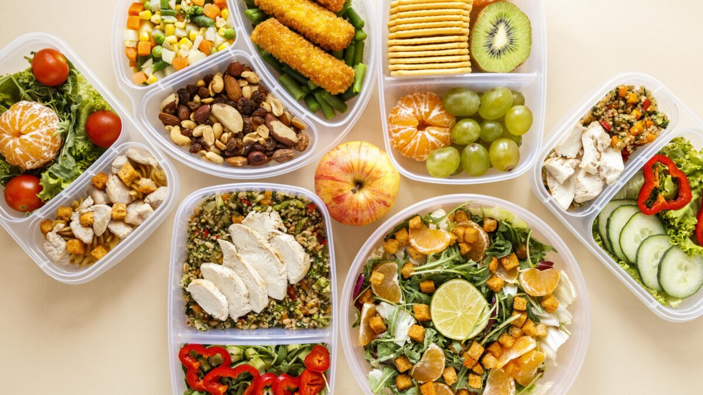

Alimentação Saudável
O aumento do consumo de fast food e alimentos industrializados é um dos grandes vilões da atualidade. Além disso, a correria do dia a dia e as mudanças do estilo de vida da população estão contribuindo diretamente para a baixa qualidade da alimentação. Problemas como obesidade e doenças cardíacas são cada vez mais frequentes e possuem relação direta com a falta de uma alimentação saudável.
Uma alimentação saudável frequentemente é confundida com comer muito. Entretanto, uma alimentação saudável está muito mais relacionada com a variedade e qualidade do que está sendo ingerido do que com a quantidade. As nossas refeições devem obedecer às necessidades do nosso organismo, contendo, portanto, todos os nutrientes necessários, tais como vitaminas, proteínas, lipídios e carboidratos.
Outro ponto importante para ter uma alimentação saudável é a regularidade das refeições. O ideal é comer de três em três horas, sendo assim, devemos realizar as seguintes refeições diárias: café da manhã, lanche da manhã, almoço, lanche da tarde, jantar e ceia.
A seguir você encontrará algumas dicas de como ter uma alimentação mais saudável:
- Evite frituras e alimentos muito gordurosos. Alimentos assados, cozidos e grelhados são mais saudáveis.
- Inclua três porções de leite e derivados na sua dieta. Prefira produtos lácteos desnatados.
- Coma pelo menos uma porção de carnes, aves, peixes ou ovos.
- Evite bebidas alcoólicas, refrigerantes e outras bebidas industrializadas.
- Não cozinhe os legumes excessivamente, pois eles podem perder nutrientes importantes.
- Inclua na sua dieta diária seis porções do grupo dos cerais, tubérculos e raízes.

É importante ressaltar que uma alimentação saudável não se baseia em comidas “menos gostosas”. O ponto chave para ter uma alimentação de qualidade é comer de tudo, porém na quantidade certa. Sendo assim, evite realizar dietas restritivas, que, com certeza, colocarão sua saúde em risco. Atenção: Um adulto necessita de 1800 a 2500 calorias diárias. A necessidade de energia para cada pessoa varia de acordo com o estilo de vida e com o sexo.